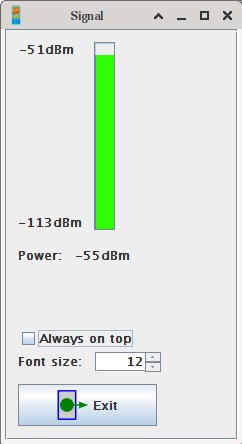

JYMAG - Signal power window

This window allows checking the phone's detected signal power (mobile operator's signal
at your location).
The port and its settings are the ones set in the main window.
- The power bar shows the current level graphically
- The power label shows the numeric value of the signal power
- Press "Exit" to close the window
- Use the font size spinner to adjust the font size of this window
- The "Always on top" checkbox allows you to make the window always visible